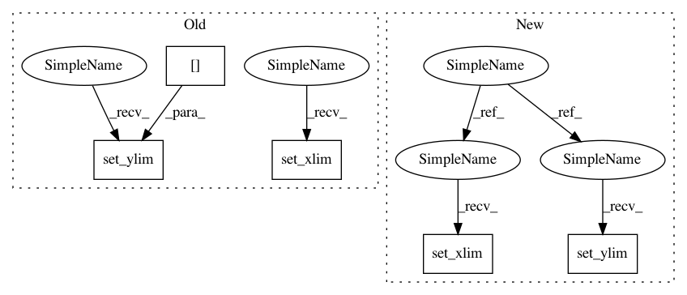

8e4250ba8221d956c282067d11e2df8a4c3299ab,librosa/display.py,,__axis_log,#Any#Any#Any#Any#Any#Any#,414
Before Change
im_phantom.set_data(*args)
axes_phantom.images[0] = im_phantom
axes_phantom.set_xlim(0, data.shape[1])
axes_phantom.set_ylim(0, data.shape[0])
positions = np.linspace(0, n, n_ticks, endpoint=False, dtype=int)
values = np.linspace(0, 0.5 * sr, n, endpoint=True, dtype=int)
After Change
**_kwargs):
"""Plot a log-scaled image"""
axes_phantom = plt.gca()
if kwargs is None:
kwargs = dict()
aspect = kwargs.pop("aspect", None)
n, ticker, labeler = __get_shape_artists(data, horiz)
t_log, t_inv = __log_scale(n)
if horiz:
args = (t_log, np.linspace(0, data.shape[0], data.shape[0], dtype=int),
data)
else:
args = (np.linspace(0, data.shape[1], data.shape[1], dtype=int),
t_log, data)
im_phantom = img.NonUniformImage(axes_phantom,
extent=(args[0].min(), args[0].max(),
args[1].min(), args[1].max()),
**kwargs)
im_phantom.set_data(*args)
kwargs["aspect"] = aspect
axes_phantom.images[0] = im_phantom
axes_phantom.set_xlim(args[0].min(), args[0].max())
axes_phantom.set_ylim(args[1].min(), args[1].max())
positions = np.linspace(0, n, n_ticks, endpoint=False, dtype=int)
values = np.linspace(0, 0.5 * sr, n, endpoint=True, dtype=int)
In pattern: SUPERPATTERN
Frequency: 3
Non-data size: 5
Instances
Project Name: librosa/librosa
Commit Name: 8e4250ba8221d956c282067d11e2df8a4c3299ab
Time: 2015-01-28
Author: brian.mcfee@nyu.edu
File Name: librosa/display.py
Class Name:
Method Name: __axis_log
Project Name: has2k1/plotnine
Commit Name: 83ceee3b08a8e12b286479b021e85b64fc8eb40d
Time: 2019-08-18
Author: has2k1@gmail.com
File Name: plotnine/facets/facet.py
Class Name: facet
Method Name: set_limits_breaks_and_labels
Project Name: scipy/scipy
Commit Name: af6f52cd3cee8ade0c4a78d6ef254279c0af111a
Time: 2017-01-31
Author: perimosocordiae@gmail.com
File Name: scipy/spatial/_plotutils.py
Class Name:
Method Name: _adjust_bounds